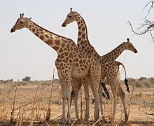
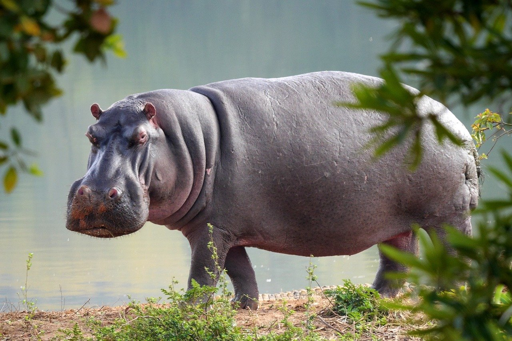
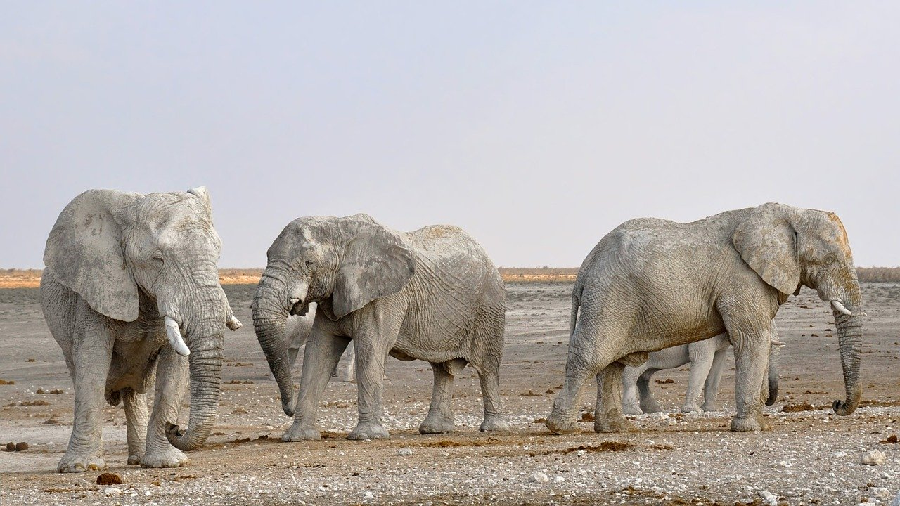
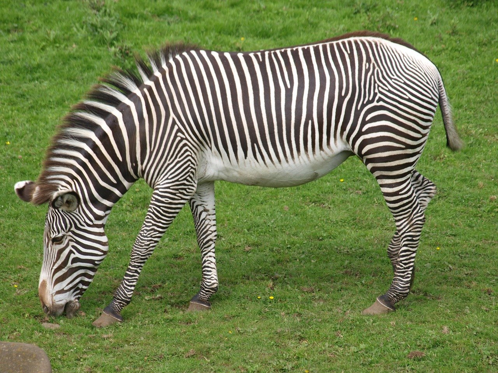
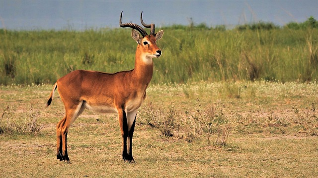
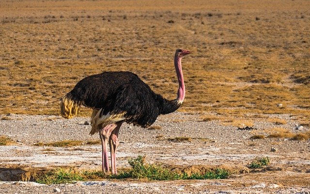

Welcome to Africa!
Africa is the home to many different kinds of animals that you will not find anywhere else. These are a few of them.
 My Virtual Zoo
My Virtual Zoo Africa is the home to many different kinds of animals that you will not find anywhere else. These are a few of them.
 The West African giraffe (G. c. peralta) is endemic to south-western Niger.[21] This animal has a lighter pelage than other subspecies,[37]:322 with red lobe-shaped blotches that reach below the hocks. The ossicones are more erect than in other subspecies and males have well-developed median lumps.[29]:52–53
It is the most endangered subspecies within Giraffa, with 400 individuals remaining in the wild.[21] Giraffes in Cameroon were formerly believed to belong to this species, but are actually G. c. antiquorum.[28] This error resulted in some confusion over its status in zoos, but in 2007, it was established that all "G. c. peralta" kept in European zoos actually are G. c. antiquorum. The same 2007 study found that The West African giraffe was more closely related to the Rothschild's giraffe than the Kordofan and its ancestor may have migrated from eastern to northern Africa and then to its current range with the development of the Sahara Desert. At its largest, Lake Chad may have acted as a barrier between West African and Kordofan giraffes during the Holocene (before 5000 BC).
For More Information, please visit: https://en.wikipedia.org/wiki/Giraffe
 The hippopotamus (/ˌhɪpəˈpɒtəməs/ HIP-ə-POT-ə-məs; Hippopotamus amphibius), also called the common hippopotamus is a large, mostly herbivorous, semiaquatic mammal and ungulate native to sub-Saharan Africa. It is one of only two extant species in the family Hippopotamidae, the other being the pygmy hippopotamus (Choeropsis liberiensis or Hexaprotodon liberiensis). The name comes from the ancient Greek for "river horse" (ἱπποπόταμος). After the elephant and rhinoceros, both of which are found in Africa, the hippopotamus is the third-largest type of land mammal and the heaviest extant artiodactyl. Despite their physical resemblance to pigs and other terrestrial even-toed ungulates, the closest living relatives of the Hippopotamidae are cetaceans (whales, dolphins, porpoises, etc.) from which they diverged about 55 million years ago.
Hippos are recognisable by their barrel-shaped torsos, wide-opening mouths revealing large canine tusks, nearly hairless bodies, columnar legs and large size; adults average 1,500 kg (3,310 lb) and 1,300 kg (2,870 lb) for males and females respectively. Despite its stocky shape and short legs, it is capable of running 30 km/h (19 mph) over short distances. Hippos inhabit rivers, lakes, and mangrove swamps, where territorial males preside over a stretch of river and groups of five to thirty females and young hippos. During the day, they remain cool by staying in the water or mud; reproduction and childbirth both occur in water. They emerge at dusk to graze on grasses. While hippos rest near each other in the water, grazing is a solitary activity and hippos are not territorial on land. The hippo is among the most dangerous animals in the world as it is highly aggressive and unpredictable. They are threatened by habitat loss and poaching for their meat and ivory canine teeth.
For More Information, please visit: https://en.wikipedia.org/wiki/Hippopotamus
 The African elephant (Loxodonta) is a genus comprising two living elephant species, the African bush elephant (L. africana) and the smaller African forest elephant (L. cyclotis). Both are herbivores and live in groups. They have grey skin and differ in the size of their ears and tusks, and in the shape and size of their skulls. Both species are listed as Vulnerable species on the IUCN Red List since 2004, and are threatened by habitat loss and fragmentation. Poaching for the illegal ivory trade is a threat in several range countries as well.
For More Information, please visit: https://en.wikipedia.org/wiki/African_elephant
 Zebras are several species of African equids (horse family) united by their distinctive black-and-white striped coats. Their stripes come in different patterns, unique to each individual. They are generally social animals that live in small harems to large herds. Unlike their closest relatives, horses and donkeys, zebras have never been truly domesticated.
There are three species of zebras: the plains zebra, the mountain zebra and the Grévy's zebra. The plains zebra and the mountain zebra belong to the subgenus Hippotigris, while Grévy's zebra is the sole species of subgenus Dolichohippus. The latter resembles an ass, to which zebras are closely related, while the former two look more horse-like. All three belong to the genus Equus, along with other living equids. The unique stripes of zebras make them one of the animals most familiar to people. They occur in a variety of habitats, such as grasslands, savannas, woodlands, thorny scrublands, mountains, and coastal hills. Various anthropogenic factors have had a severe impact on zebra populations, in particular hunting for skins and habitat destruction. Grévy's zebra and the mountain zebra are endangered. While plains zebras are much more plentiful, one subspecies, the quagga, became extinct in the late 19th century – though there is currently a plan, called the Quagga Project, that aims to breed zebras that are phenotypically similar to the quagga in a process called breeding back
For More Information, please visit: https://en.wikipedia.org/wiki/Zebra
 The impala (/ɪmˈpɑːlə, -ˈpælə/, Aepyceros melampus) is a medium-sized antelope found in eastern and southern Africa. The sole member of the genus Aepyceros, it was first described to European audiences by German zoologist Hinrich Lichtenstein in 1812. Two subspecies are recognised—the common impala, and the larger and darker black-faced impala. The impala reaches 70–92 centimetres (28–36 inches) at the shoulder and weighs 40–76 kg (88–168 lb). It features a glossy, reddish brown coat. The male's slender, lyre-shaped horns are 45–92 centimetres (18–36 inches) long.
Active mainly during the day, the impala may be gregarious or territorial depending upon the climate and geography. Three distinct social groups can be observed: the territorial males, bachelor herds and female herds. The impala is known for two characteristic leaps that constitute an anti-predator strategy. Browsers as well as grazers, impala feed on monocots, dicots, forbs, fruits and acacia pods (whenever available). An annual, three-week-long rut takes place toward the end of the wet season, typically in May. Rutting males fight over dominance, and the victorious male courts female in oestrus. Gestation lasts six to seven months, following which a single calf is born and immediately concealed in cover. Calves are suckled for four to six months; young males—forced out of the all-female groups—join bachelor herds, while females may stay back. The impala is found in woodlands and sometimes on the interface (ecotone) between woodlands and savannahs; it inhabits places close to water. While the black-faced impala is confined to southwestern Angola and Kaokoland in northwestern Namibia, the common impala is widespread across its range and has been reintroduced in Gabon and southern Africa. The International Union for Conservation of Nature (IUCN) classifies the impala as a species of least concern; the black-faced subspecies has been classified as a vulnerable species, with less than 1,000 individuals remaining in the wild as of 2008.
For More Information, please visit: https://en.wikipedia.org/wiki/Impala
 The common ostrich (Struthio camelus) or simply ostrich, is a species of large flightless bird native to certain large areas of Africa. It is one of two extant species of ostriches, the only living members of the genus Struthio in the ratite order of birds. The other is the Somali ostrich (Struthio molybdophanes), which was recognized as a distinct species by BirdLife International in 2014 having been previously considered a very distinctive subspecies of ostrich.[2][3]
The common ostrich belongs to the order Struthioniformes. Struthioniformes contained all the ratites, such as the kiwis, emus, rheas, and cassowaries. However, recent genetic analysis has found that the group is not monophyletic, as it is paraphyletic with respect to the tinamous, so the ostriches are classified as the only members of the order.[4] [5]Phylogenetic studies have shown that it is the sister group to all other members of Palaeognathae and thus the flighted tinamous are the sister group to the extinct moa.[6][7] It is distinctive in its appearance, with a long neck and legs, and can run for a long time at a speed of 55 km/h (34 mph) [8] with short bursts up to about 70 km/h (43 mph),[9] the fastest land speed of any bird.[10] The common ostrich is the largest living species of bird and lays the largest eggs of any living bird (the extinct elephant birds of Madagascar and the giant moa of New Zealand laid larger eggs). The common ostrich's diet consists mainly of plant matter, though it also eats invertebrates. It lives in nomadic groups of 5 to 50 birds. When threatened, the ostrich will either hide itself by lying flat against the ground, or run away. If cornered, it can attack with a kick of its powerful legs. Mating patterns differ by geographical region, but territorial males fight for a harem of two to seven females. The common ostrich is farmed around the world, particularly for its feathers, which are decorative and are also used as feather dusters. Its skin is used for leather products and its meat is marketed commercially, with its leanness a common marketing point.[9]
For More Information, please visit: https://en.wikipedia.org/wiki/Common_ostrich